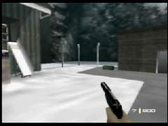
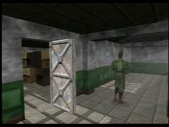
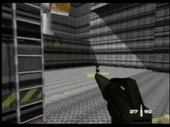
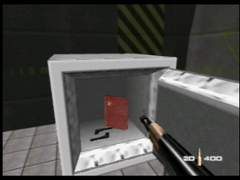
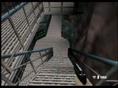
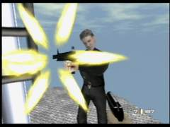

|
.
| Goldeneye
: Test Complet |
|
| Goldeneye
: Test Complet |
Présentation - D’emblée, nous sommes dans l’Univers de James Bond. Musique, Ouverture comme dans les Films, Systèmes de Dossier selon les Parties, bruits de Feuilles qu’on tourne. Lorsque l’on met le Jeu en Pause, on entre dans la Montre de James Bond, l’Aiguille tourne encore dans le fond, on navigue facilement dans tous les Interfaces (Solo, Multiplayer, Pause) sans se prendre la tête pendant des Heures. Question présentation, c’est un sans faute. On peut reprocher une sobriété (ou pauvreté, c’est selon) des Visuels. Mon Argument sur cette pauvreté des Visuels est la suivante : Goldeneye est un des très rares Jeux qui ne font pas mal aux yeux une fois qu’on a passé un Après-Midi dessus. Pas de couleurs criardes, pas de flashes dans tous les sens. C’est sobre, simple, efficace. Graphismes
- Pour son époque, Goldeneye est une claque, n’oubliez
pas que la Concurrence s’appelle Playstation en ces temps-là,
et qu’à coté de ça, Goldeneye fait figure
du Jeu le plus Beau du Monde. Turok imitait les Graphismes d’une
Jungle, de Temples. Goldeneye, lui, devait paraître « réel
». Et il y arrive sans aucun problème, on sait très
bien où l’on est, même si cela reste assez basique
par endroits. |



Le Truc le plus bluffant est que si vous avez vu le Film, vous vous retrouvez dans exactement les mêmes décors que le Film, d’où une immersion totale du Joueur. Le Graphisme ne devient alors pas un facteur « Visuel » mais un Facteur de « Gameplay ». Beaux ou Laids, les Graphismes de Goldeneye plongent le Joueur dans le Film, et pour un Jeu-License, à l’Epoque, c’est énorme. Le Niveau le plus réussi est sans aucun doute Facility, de par sa variété. Autre détail qui tue, comparé à Turok : pas de Brume ! Les Textures sont souvent fines, réalistes, on sait sur quoi on marche. On tire sur un mur, et il y a l’impact de balle dedans ! Pour l’Epoque, c’est beaucoup. Les Ennemis sont un peu carrés, les couleurs ne sont pas très chatoyantes, mais… le plaisir l’emporte. Il suffit de lancer un Petit Battle dans le Temple, et on oublié très vite les Graphismes assez pauvres pour tout simplement s’amuser à chercher l’Adversaire. Les Graphismes sont également très variés, on voyage beaucoup dans ce Jeu, on voit du Pays ! Animation
– Fluide pour l’Epoque, aujourd’hui Goldeneye paraît
lent. Lent, mais Fluide. Les Bonhommes bougent bien, en Battle, à
4 Joueurs, ça marche très bien, rien à dire. Attention
aux Ralentissements si on joue trop avec les Explosifs, genre les Roquettes
en Battle, là, la Nintendo 64 montre ses Limites. |



Gameplay – On est tout de suite dans le Jeu, à 100%. On met très exactement 5 minutes pour s’habituer aux mouvements, hyper simples, et c’est le Bonheur. En Battle, faites jouer une Personne qui n’a jamais touché à une Manette de sa vie, et vous verrez, c’est génial. Il y a beaucoup de Maniabilités différentes, si vous êtes habitué à celle de Turok. Le Système de Visée est simple. Aujourd’hui, il paraît Archaïque, comparé aux Manettes à Double Joysticks, mais le Numérique à son petit Charme… Autre Facteur qui a son Charme, l’Intelligence Artificielle. Pour l’Epoque, ils sont rusés, les Bonhommes ! Ils vous tournent autour, il ouvrent les Portes, ils vous courent après, on se cache. C’est tout simple, ça marche. Vous êtes directement dans la Peau de James Bond. En terme de Gameplay, c’est un sans fautes. Musiques et Sons – Les Musiques ne sont pas si variées que ça, vu qu’elles sont toutes axées autour du Thème de James Bond. Cela dit, il y en a de très mémorables. Celle du Barrage, par exemple, ou celle de Surface, dans la Neige, avec ces Notes très basses rappelant le Vent. Celle de Statue fait très Film d’Espionnage ! Une des Meilleures, la Musique d’Archives, est particulièrement adaptée aux Parties de Battle fourbes. Celle de Cradle est merveilleuse, stressante, surtout lorsque vous jouez ce Niveau en Agent 00. Petit Détail : les Musiques d’Ascenseur, superbes, compte tenu de leur toute petite importance. Un Souci du détail que j’apprécie. Les Bruits
des Armes surprennent par leur Réalisme. On est loin des Rayons
Lasers et autres Armes Nucléaires. Tous les Sons ont cette touche
réaliste qui fait qu’on est en plein dans le Jeu. Chaque
Arme à un Son différent, c’est assez bluffant. Qui
n’a jamais adoré entendre le Bruit du RCP-90 lorsque vous
le déchargez en pleine figure sur l’Adversaire ? Et le
M-16, avec les étoiles jaunes qui apparaissent ? Question Sons,
c’est très bon. |



Difficulté – Il y a 3 Niveaux de Difficulté, Agent (Facile), Agent Secret (Moyen) et Agent 00 (Difficile). Selon la Difficulté choisie, vous avez plus ou moins d’Objectifs à remplir. Les Ennemis sont plus intelligents, rapides, et visent très bien. Du moins, plus la Difficulté augmente, plus les Balles font mal. Détail qui tue : vous ne pouvez pas récupérer d’Energie, vous pouvez trouver quelques fois un Gilet Pare-Balles, et c’est tout. Lorsque vous avez fini le Jeu à 100% (Bon Courage), vous avez le Mode 007. Lorsque vous commencez une Mission, vous pourrez paramétrer l’Energie des Ennemis, celle qu’ils vous enlèvent, leur Degré de Précision, et leur Temps de Réaction, tout cela entre 0 et 1000% ! Incroyable ! Allez voir ici si ça vous intéresse. Dans ce Jeu, il y a des Codes comme « Munition Infinies » ou « Invincibilité ». Là où Rare sont des Génies, c’est qu’on ne peut pas utiliser ces Codes pour finir une Mission. Vous pouvez finir la Dernière Mission du Jeu en étant Invincible, elle ne sera pas validée ! De plus, la façon d’obtenir ces Codes est ingénieuse : il faut finir un Niveau (avec tous les Objectifs, cela va sans dire) sous un certain temps, souvent court. C’est dur, souvent crispant, et il faut s’accrocher pour ne pas devenir fou. Allez donc faire un Tour dans les Partie où je dis comment avoir ces Codes, c’est une parcours du Combattant. Certains Code sont essentiels pour améliorer la Difficulté du Mode Battle, comme le Code « No Radar ». Le Système de Codes de Goldeneye a beaucoup fait parler de lui à l’Epoque. Rien à voir avec ces Jeux ou il suffit d’entrer un Mot de Passe, et hop, vous avez fini le Jeu 3 jours après l’avoir acheté. |


Durée
de Vie – Rien qu’avec le Système des Codes, c’est
parfait, car pour finir une Mission, il n’y a pas d’autres
choix que de le faire à la loyale. A l’Ancienne ! Avant
de finir Goldeneye à 100%, en Mode Solo, vous avez donc le temps.
Et puis vous pouvez toujours vous amuser à explorer le Jeu. Le
Battle Mode rend Goldeneye inusable. Littéralement. Les Niveaux
sont variés, bien foutus, avec des recoins, escaliers, passages
secrets, etc. Vous avez 4 Manettes ? Commencez en début d’après-midi,
vous n’avez pas fini. Vous pouvez même faire des compétitions.
Il y en a pour tous les Goûts, vous pouvez tout paramétrer,
c’est un vrai bonheur. Beaucoup de gens ont acheté une
N6’ rien que pour Goldeneye. Je les comprends. C’est le
Jeu auquel j’ai le plus joué. |